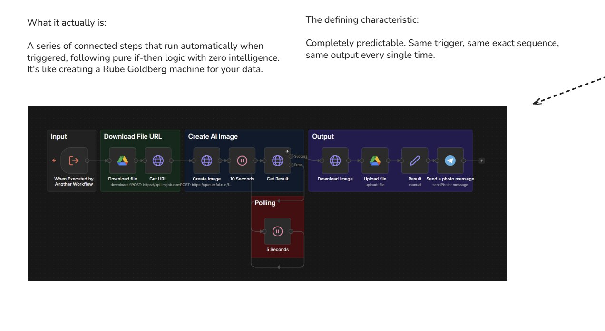

Automacao Simples (Sem IA)
A camada mais subestimada: fluxos baseados em regras que resolvem 50% dos problemas

Automacao Simples: Passos previsiveis, execucao automatica, zero IA
O Que E Automacao Simples?
Fluxos automaticos baseados em regras fixas
Automacao simples sao sequencias de passos que rodam automaticamente quando disparadas, seguindo logica pura if/then com zero inteligencia artificial. Pense como uma "maquina de Rube Goldberg" para seus dados.
A caracteristica definidora:
"Completamente previsivel. Mesmo gatilho, mesma sequencia exata, mesma saida - toda vez."
A Regra dos 50%
O insight mais importante deste curso
Cerca de 50% das automacoes em empresas NAO precisam de IA!
Antes de adicionar complexidade com IA, pergunte: "Isso pode ser resolvido com regras simples?"
Exemplos que NAO precisam de IA:
- • Backup diario as 3h da manha
- • Notificar quando estoque < 10
- • Mover arquivo quando upload completo
- • Enviar email apos pagamento
- • Criar tarefa quando ticket aberto
O erro comum:
Usar AI Agent para processos lineares e desperdicar tokens (e dinheiro) em algo que um simples if/then resolve.
"Nao mate uma mosca com um canhao."
Caracteristicas Principais
O que define automacao simples
Deterministico
Sempre executa os mesmos passos na mesma ordem. Sem surpresas, sem variacao.
Baseado em Gatilhos
Dispara automaticamente: horario, evento, webhook, mudanca de status.
Sem Humano
Roda em background sem precisar de interacao. Set and forget.
Custo Minimo
Zero tokens de IA. Apenas custo da plataforma de automacao.
Tipos de Gatilhos
O que dispara uma automacao
Tempo/Agendamento
Todo dia as 8h, toda segunda, primeiro dia do mes, a cada 15 minutos.
Evento em Sistema
Novo email, arquivo criado, linha adicionada, status alterado.
Webhook
Chamada HTTP de outro sistema, integracao, formulario.
Condicao Atingida
Estoque baixo, prazo vencendo, meta atingida, erro detectado.
Ferramentas Populares
Plataformas para criar automacoes simples
Zapier
- • Mais facil de usar
- • 6000+ integracoes
- • Ideal para iniciantes
- • Preco por tarefa
Make (Integromat)
- • Mais poderoso
- • Visual e flexivel
- • Melhor custo-beneficio
- • Preco por operacao
n8n
- • Open source
- • Self-hosted possivel
- • Mais tecnico
- • Maximo controle
Exemplos Praticos
Automacoes simples do dia a dia
1. Backup Automatico
2. Notificacao de Venda
3. Organizacao de Arquivos
4. Alerta de Estoque
Quando Subir na Piramide
Sinais de que voce precisa de AI Workflow
Precisa interpretar texto
Classificar emails, entender intencao, extrair informacoes de texto livre.
Decisao nao e binaria
Quando nao e simples sim/nao, mas precisa de julgamento.
Dados nao estruturados
Quando a entrada varia muito e nao segue um padrao fixo.
Resumo do Modulo
Principio-chave
"Antes de usar IA, pergunte: um if/then resolve?"